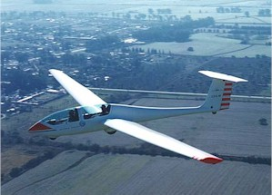

|
Club de Planeadores Los Caranchos |
|
Esta información fué obtenida del Alex's Sailplane Directory: Grob G 103A TwinII and Twin II Acro (RAF
Viking T. MK1)  Specifications
Performance
Other
The G-1o3 A Twin II was the successor of the Twin Astir with a fixed six-inch main gear fitted behind the center of gravity in a fairing and a nose wheel. The main wheel is equipped with a hydraulic brake. Modified ailerons produce a substantially improved roll response. Approach control is by top surface Schemmpp-Hith type airbrakes. The Twin II won the world Out & Return record for two-seat sailplanes (1000.88 km/ 621.92 miles) flown by Tom Knauff of the U.S. The Twin II Acro is similar to the earlier model, but with strengthened mainspar caps and steel control pushrod which permit greater aerobatic performance. The Royal Air Force acquired 100 Acros (known as the Viking T. MK.1) for its air cader training program. The G 103 has a FAA approved modification kit for all-hand control for handicapped operation. ATC. |
Información de contactoSi usted tiene deseos de volar en planeador, no dude en contactarnos
|